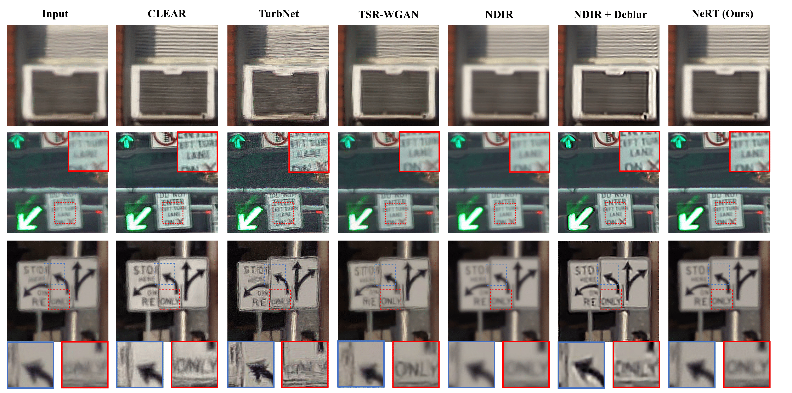

NeRT: Implicit Neural Representations
for General
Unsupervised Turbulence Mitigation
- Weiyun Jiang Rice University
- Yuhao Liu Rice University
- Vivek Boominathan Rice University
- Ashok Veeraraghavan Rice University


Abstract
The atmospheric and water turbulence mitigation problems have emerged as challenging inverse problems in computer vision and optics communities over the years. However, current methods either rely heavily on the quality of the training dataset or fail to generalize over various scenarios, such as static scenes, dynamic scenes, and text reconstructions. We propose a general implicit neural representation for unsupervised atmospheric and water turbulence mitigation (NeRT). NeRT leverages the implicit neural representations and the physically correct tilt-then-blur turbulence model to reconstruct the clean, undistorted image, given only dozens of distorted input images. Moreover, we show that NeRT outperforms the state-of-the-art through various qualitative and quantitative evaluations of atmospheric and water turbulence datasets. Furthermore, we demonstrate the ability of NeRT to eliminate uncontrolled turbulence from real-world environments. Lastly, we incorporate NeRT into continuously captured video sequences and demonstrate 48x speedup.
Reconstruction Under Atmospheric Turbulence (Static Scene)
